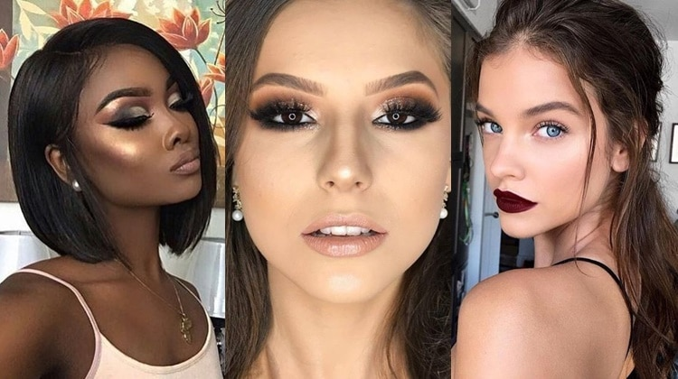

COMO A MAQUIAGUEM INFLUENCIA A AUTOESTIMA: ENTENDA O PAPEL DA MAKE NA
VALORIZAÇÃO DA MULHER

Nada como um batom e um pouco de máscara de cílios para encarar o dia se
sentindo poderosa! É inevitável: todas temos algumas inseguranças
relativas a aparência que acabam influenciando a forma como vivemos e como
nos comportamos. Para a maioria das mulheres, trabalhar a autoestima é um
processo que dura anos, mas uma boa maquiagem pode fazer a diferença, em
poucos instantes. A make vira a sua "pintura de guerra" para enfrentar o
mundo com leveza, se sentindo mais poderosa e mais você mesma. Entenda!
MAQUIAGEM AJUDA A TRANSMITIR A PERSONALIDADE E REVELA A FORMA QUE QUEREMOS
NOS APRESENTAR AO MUNDO
Qual o seu estilo de maquiagem favorito? Quer você goste de uma make nude
e minimalista ou de um look mais moderno com batom vermelho, isso diz
bastante sobre a sua personalidade. Os primeiros passos no mundo da
maquiagem são decisivos para a definição da identidade, variando ao longo
da vida de acordo com os gostos de cada uma. Isso ajuda a construir a
confiança, mostrando as virtudes que você tem ou quer ter - como poder,
sensualidade, segurança, estilo, atitude - sem precisar falar nada.